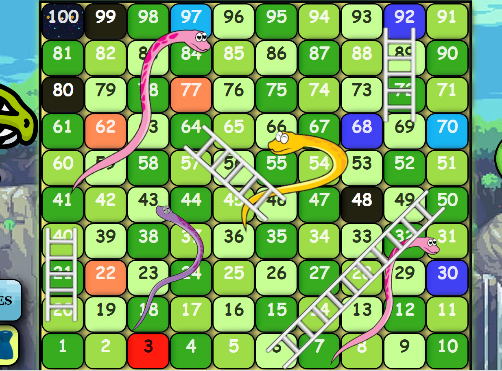

¡HOLA, AQUI TE AYUDAMOS!
El mapa del juego cuenta con 100 casillas, las cuales deben ser recorridas, por cuatro jugadores. Durante el procceso se encuentran algunas casillas con colores diferentes estas tienes unas ventajas y desventajas que marcaran el avanze del jugador.
Casilla roja
Con esta de suguro tendras demaciada ventaja ya que te ayudara a avanzar 10 casilla como sin nada, dejando atras a tus oponentes
Casilla Negra
Como se puede apreciar en la imagen una vez lleguen a los números 48, 80, y 99 este los enviaran a la primera casilla. Comenzado de nuevo el proceso del jugador
Casilla azul oscura
Una vez el jugador llegue a la casilla 92, 68 y 30 tendrá una desventaja y es que retrocederán 10 casillas, que atrasaran el avance del jugador, dándole la oportunidad a que su rival avance
Casilla azul clara
Estas casillas fuero diseñadas para una desventaja de más, ya que hace que el jugador tenga un retroceso de cinco casillas menos asi que ten mucha suerte!
Casilla color rosa
¡vaya! Que pensabas que el juego solo tenía desventajas, pues las casillas 77, 62 y 22 tienen algo que te va gustar con ella puede avanzar 5 recuadros, esto van a ser parte de tu victoria.